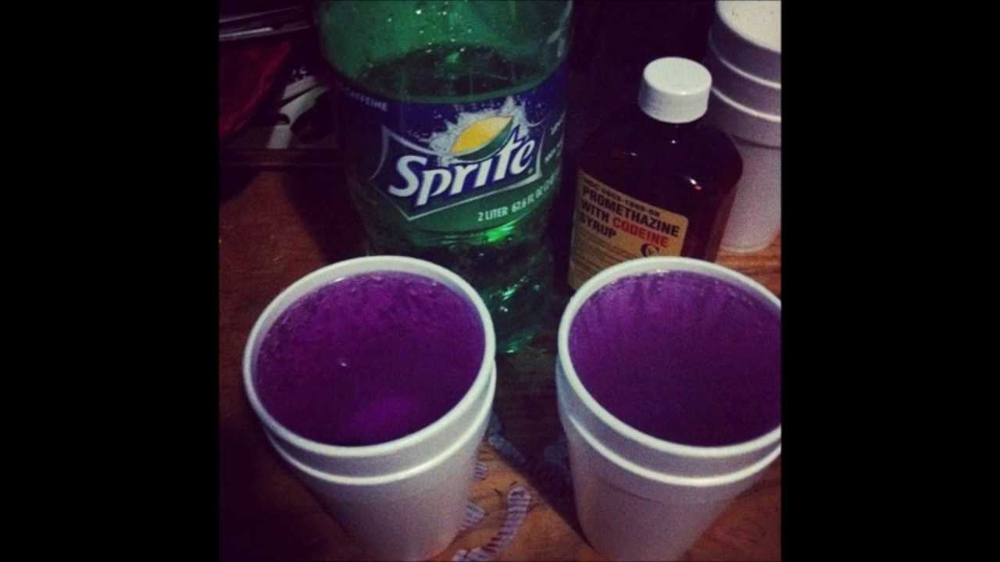

Understanding the risks of prescription opioid misuse
The name of the substance is codeine. Codeine is a type of medicine that doctors prescribe to help with pain and coughing. It comes from the opium poppy plant, just like morphine, but it's weaker. People have used it for a long time, since the 1800s, to treat different kinds of pain. It's made in labs now, but it still comes from natural sources originally.
Codeine is an opioid drug. Opioids are a group of drugs that come from opium. They are depressants, which means they slow down your body's functions and make you feel relaxed. Depressants work by attaching to parts of your brain that control pain and mood, making you less aware of hurt. This can also make you sleepy or slow your breathing if you take too much.
People take codeine in different ways. Doctors give it as pills or liquid syrup to help with pain or coughing. You swallow the pills whole or drink the syrup straight from the bottle. Sometimes it's mixed with other medicines in cough syrups you can buy. But some people misuse it by mixing the syrup with soda and candy to make a sweet drink. This mixing can make it stronger and more dangerous.
People use codeine for a few reasons. It helps stop pain from things like broken bones, surgery, or bad headaches. Doctors give it to patients in hospitals or for home use after operations. It also stops bad coughing that won't go away, like from colds or allergies. Some people use it to feel relaxed or happy, but that's not safe and can lead to problems. When used right, it helps people feel better, but wrong use can cause addiction.
There are slang words for codeine. People call the mixed drink "lean" because it makes you lean back. "Purple drank" is another name because the mix looks purple. "Sizzurp" is slang too, and "syrup" is short for the cough syrup.
